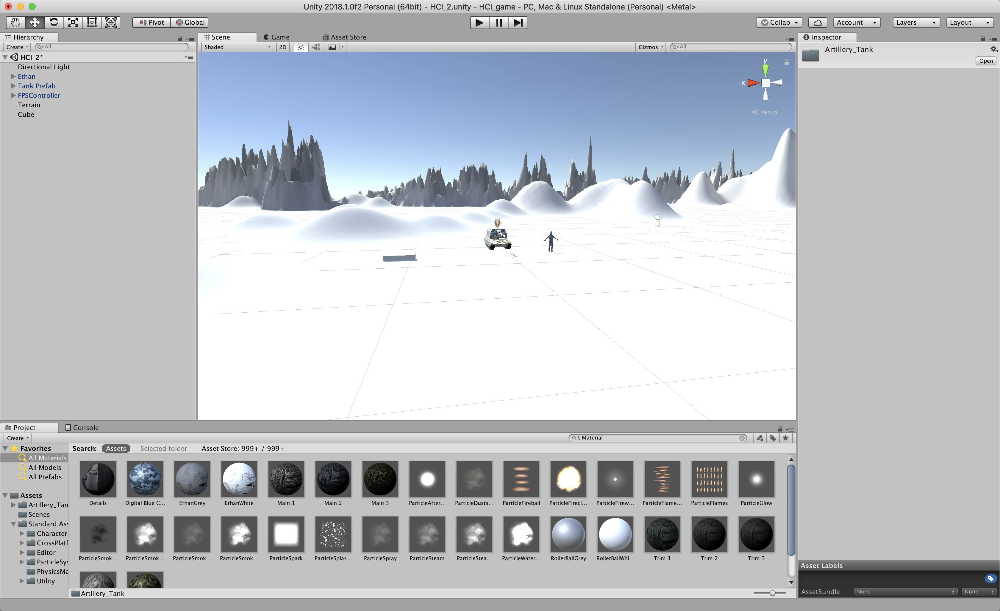
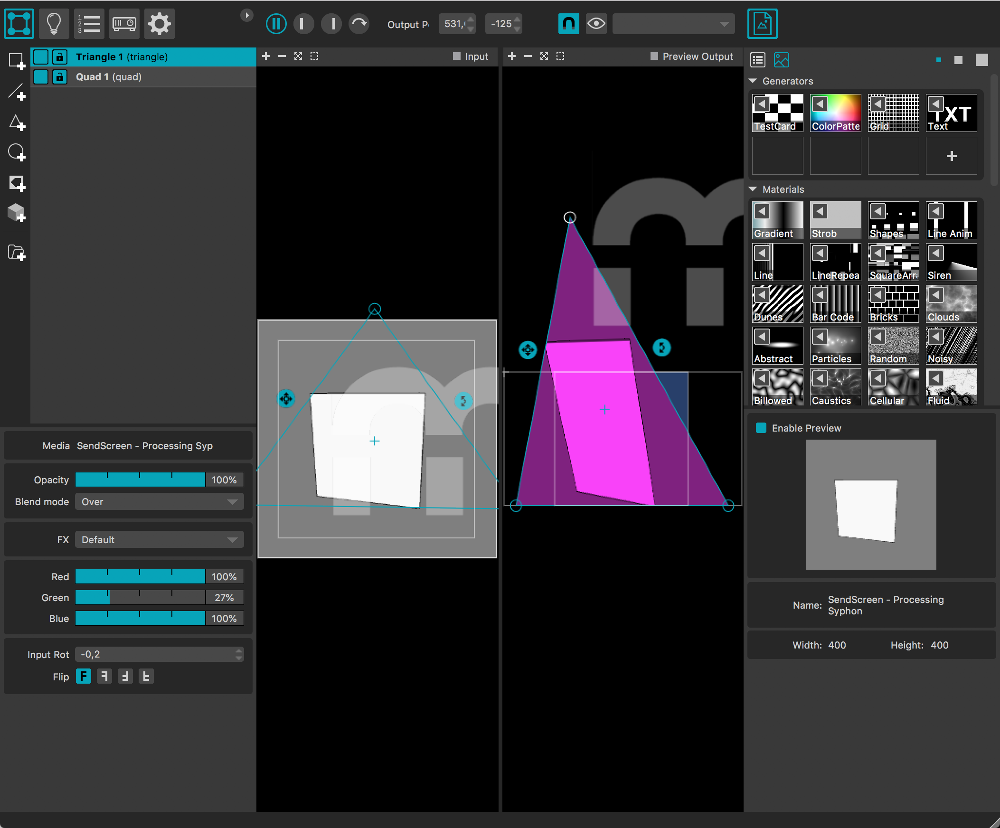
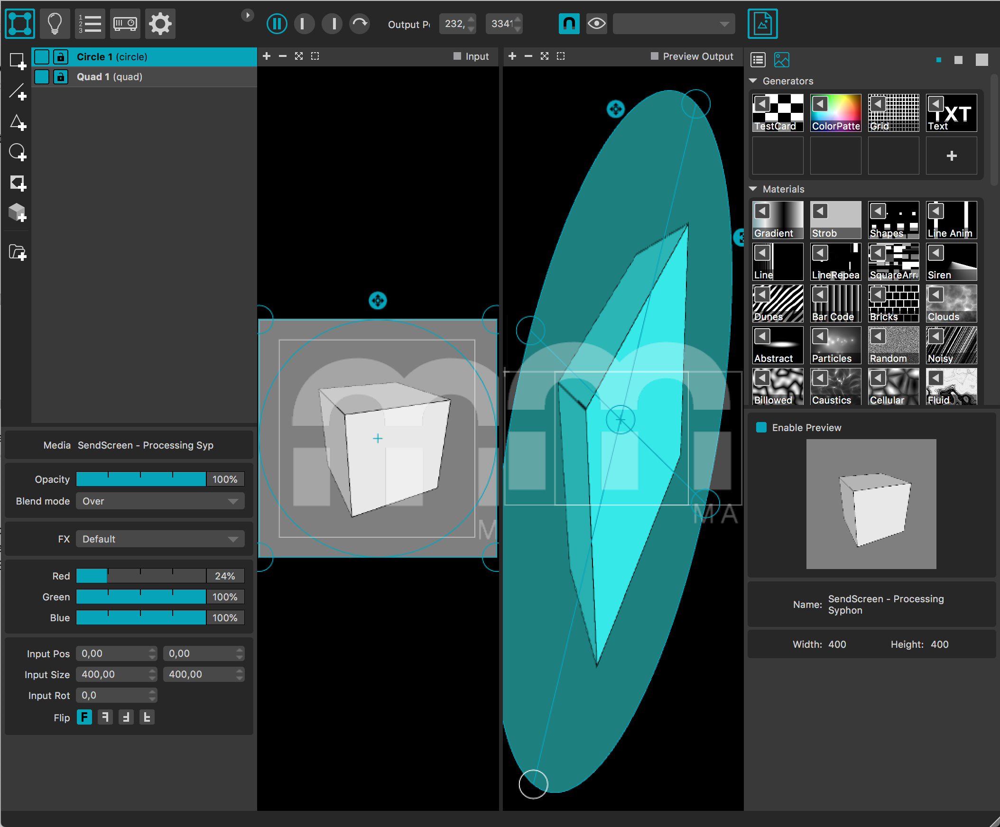
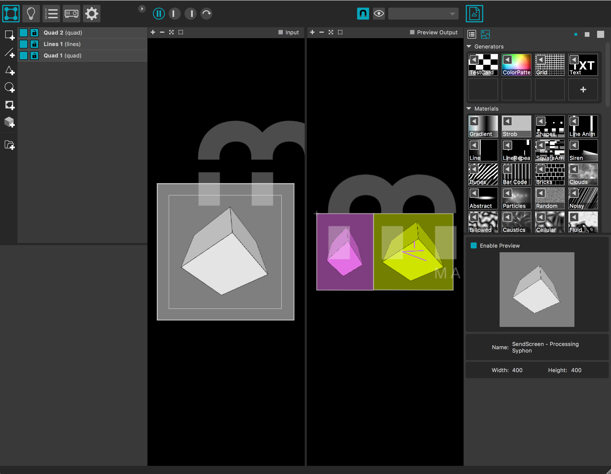

Unity/Projection mapping
Unity
Unity is een ontwikkelomgeving waarin je virtuele werelden kunt creëren. Twee belangrijk toepassingen hiervan zijn spellen en simulaties. Tijdens deze oefeningen maakte ik kennis met mezelf en met Unity door een interactieve simulatie te maken. Denk hierbij aan een soort bergen die makkelijk te creëren zijn in Unity. Vervolgens moest er een object in de wereld komen te liggen. Zoals je kunt zien heb ik voor een blok gekozen. Ook was iedereen vrij in het kiezen van een element. Ik heb gekozen om in deze witte omgeving een gecamoufleerde tank te plaatsen. De trigger die op deze tank moest zitten was een vuurtje. Wanneer je in het filmpje te dicht bij de tank komt zal het vuurtje aangaan en wanneer je te ver weg van de tank bent zal het vuurtje weer uit gaan. In het onderstaande filmpje zie je een basis van wat er gedaan kan worden met Unity.
Madmapping
Madmapper is een gebruiksvriendelijke applicatie voor projectietoewijzing (projecteren op 3-dimensionale vlakken). Een praktisch aspect van MadMapper is dat de software werkt met een Siphon-invoer. De toepassing 'Verwerken' kan Siphon uitvoeren. Dit betekent dat je een interactieve omgeving in Processing kunt creëren en deze op een fysieke manier kunt projecteren op een object door de uitvoer naar Madmapper te sturen. De bedoeling was dat wij uit de bibliotheek een bestand openen en hiermee even gingen uitproberen hoe madmapper werkt. Zoals je op de screenshots kunt zien, het vlak veranderen naar een rechthoek of vierkant. Ook zijn er lijnen in het gele vierkant toegevoegd. Alles kan met madmapper zo geprojecteerd worden dat het echt lijkt. Met een beamer kun je bijvoorbeeld alleen maar op een rechte muur iets projecteren. Een ronde paal is met dit programma ook geen probleem. Dat is het voordeel van madmapper.
  